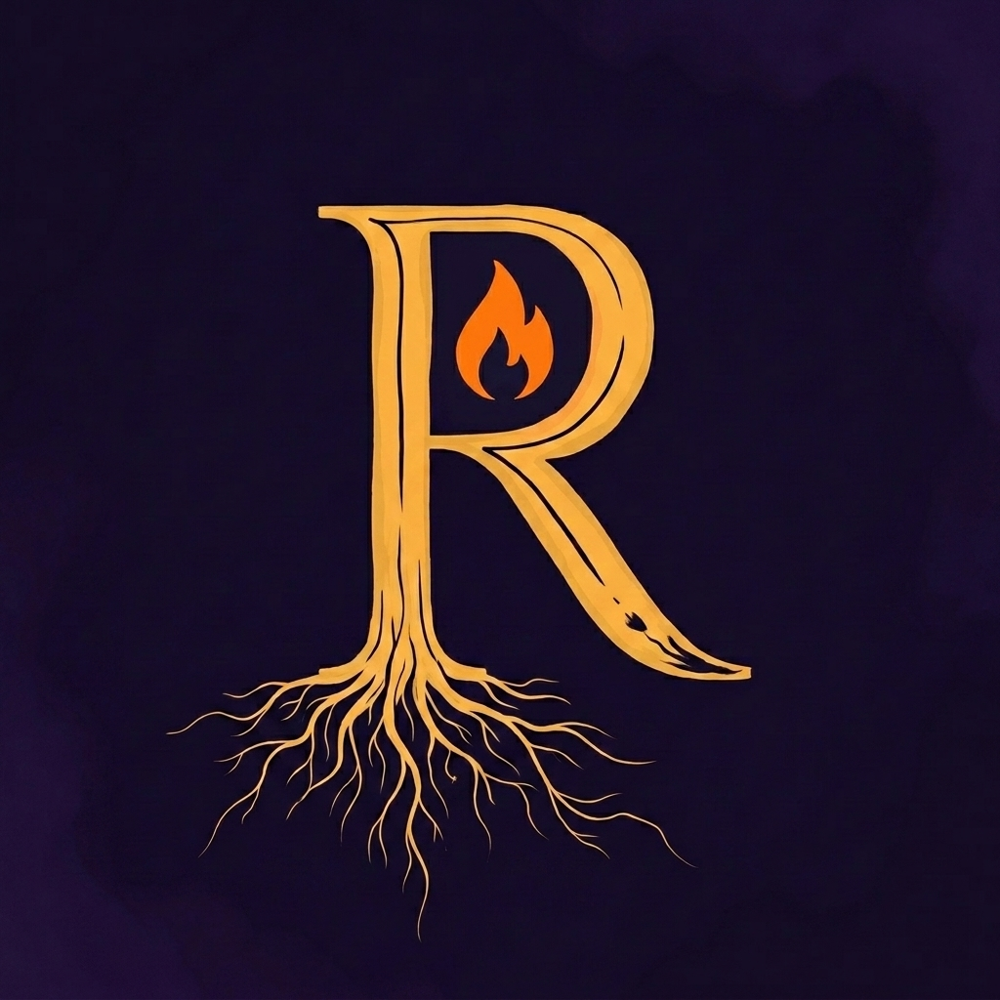
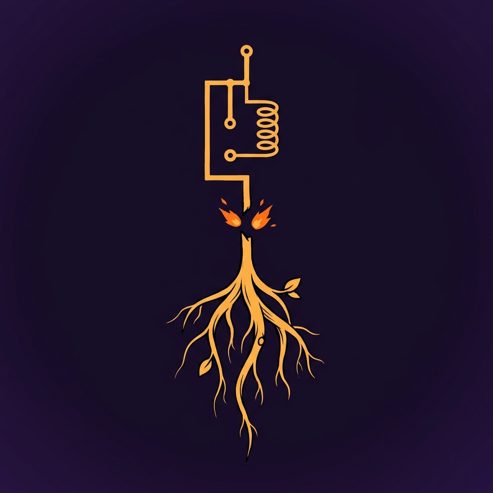
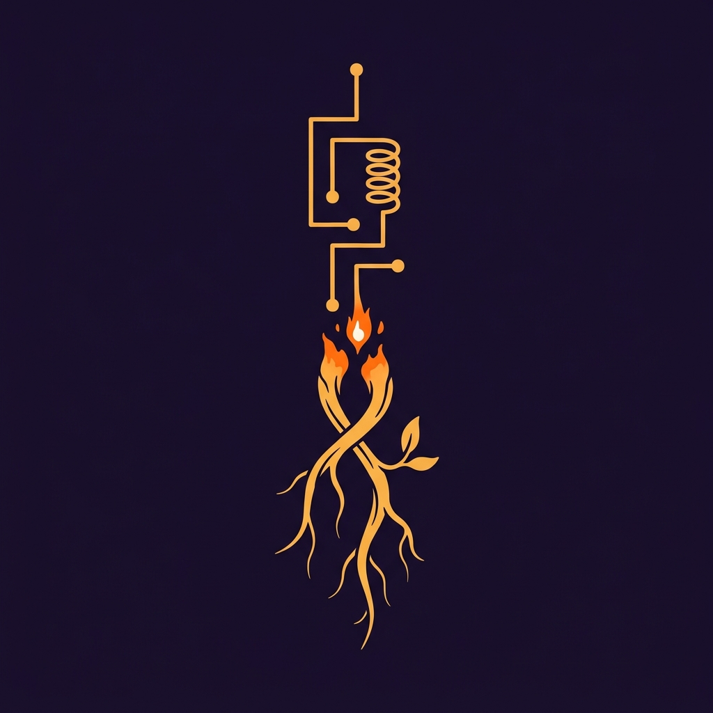
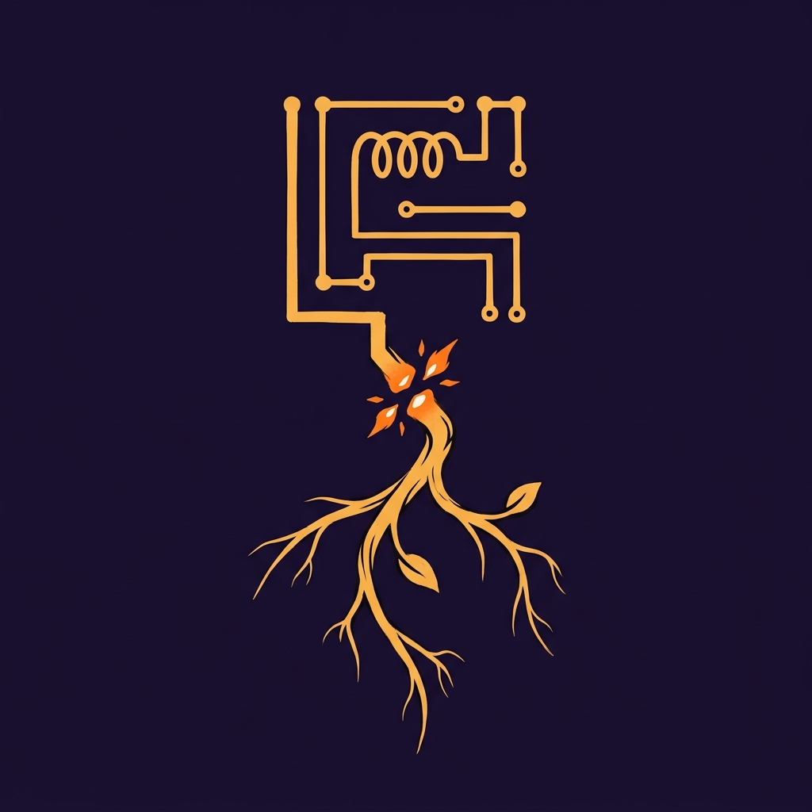
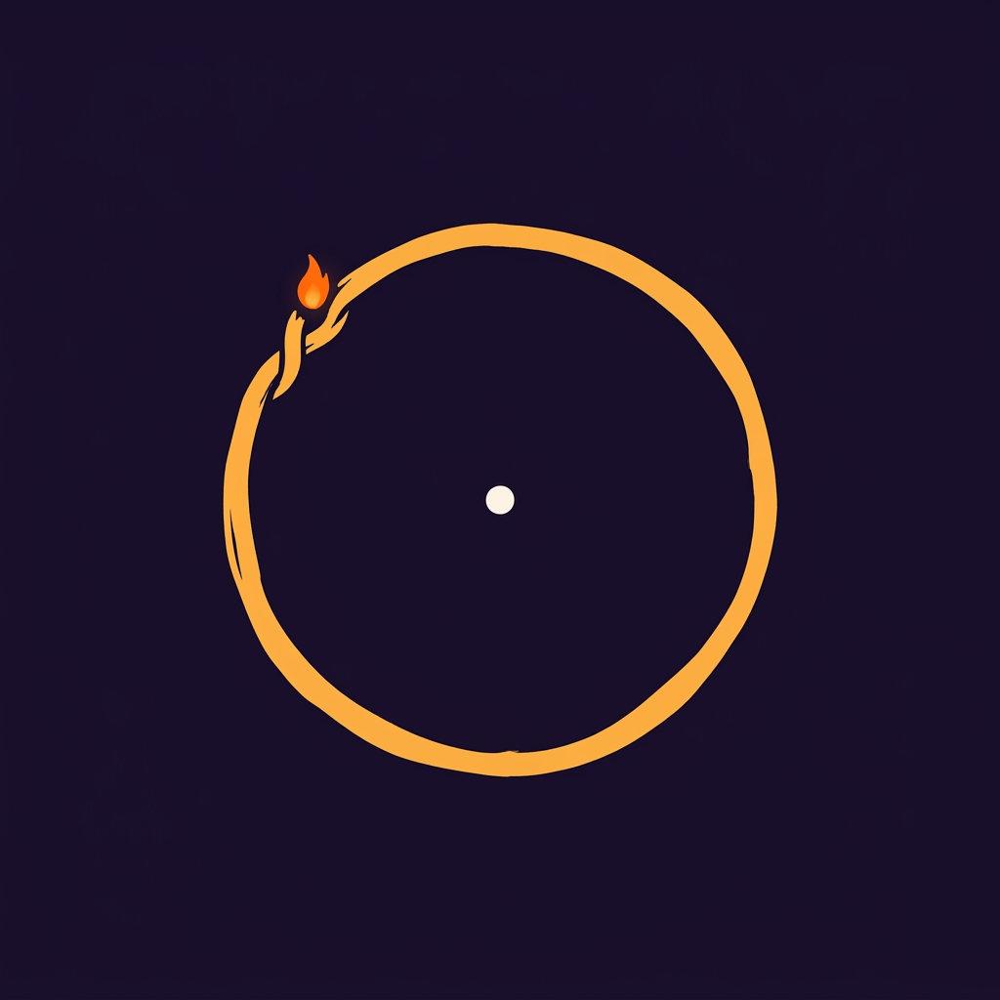
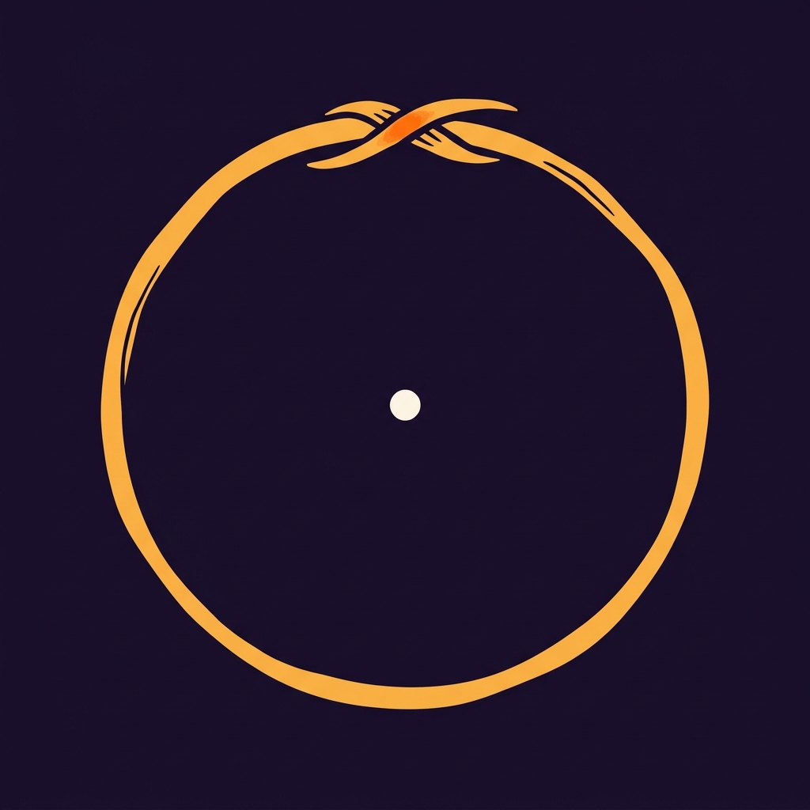
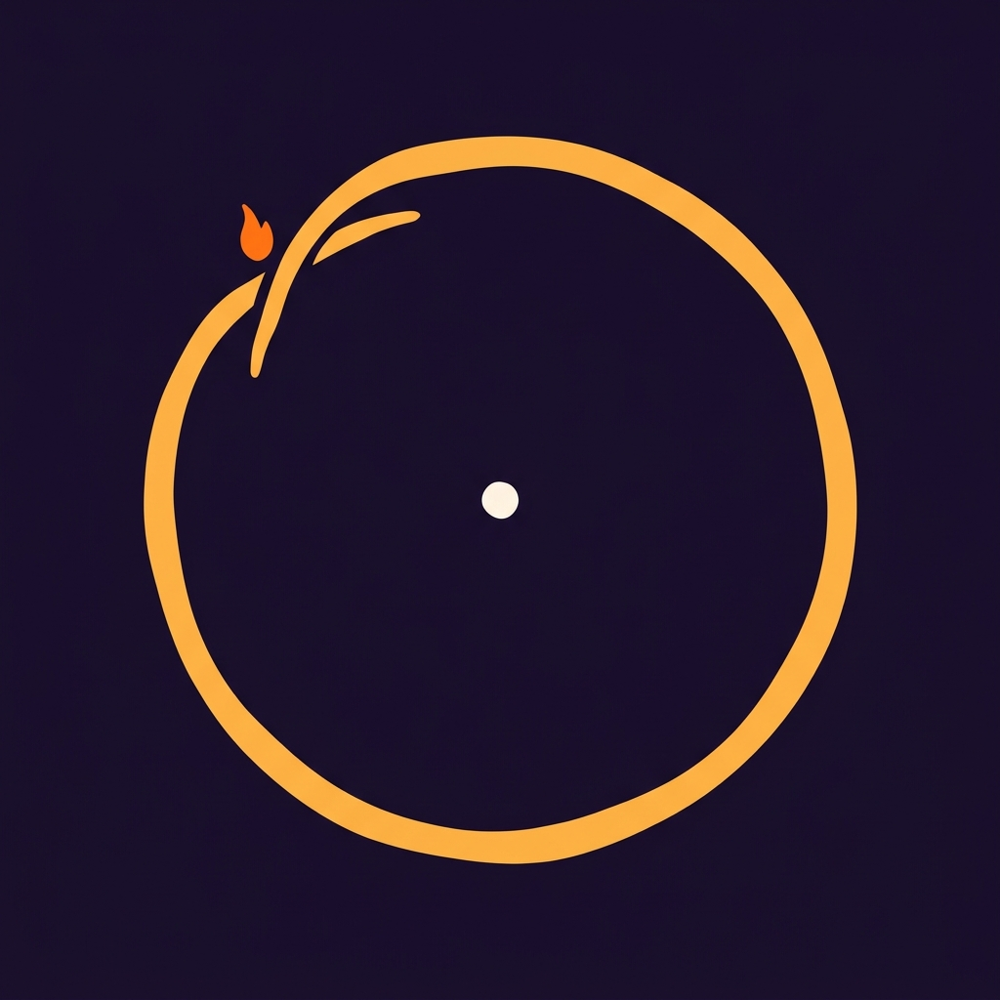
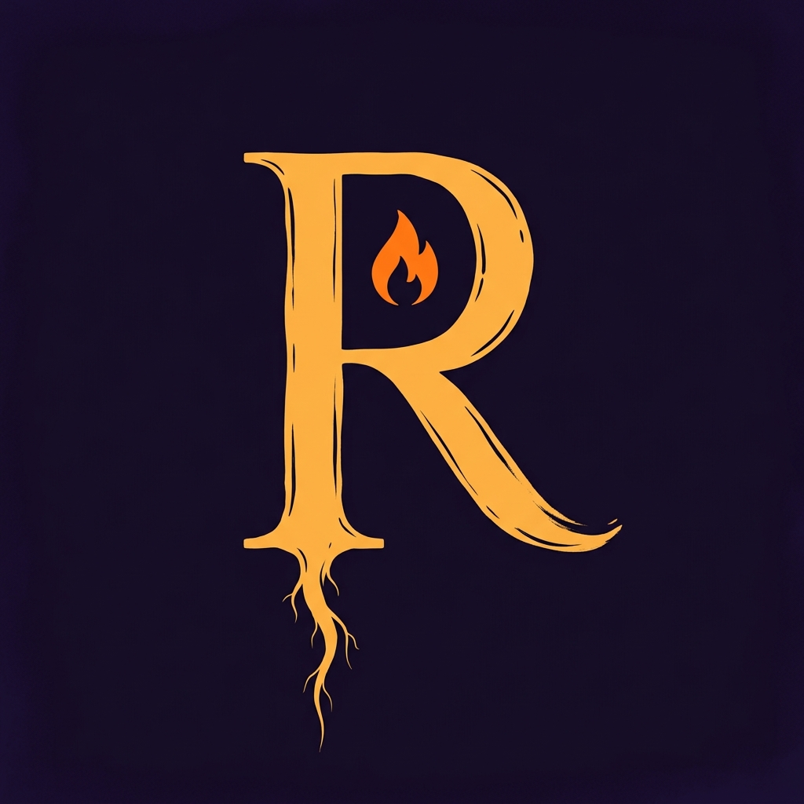
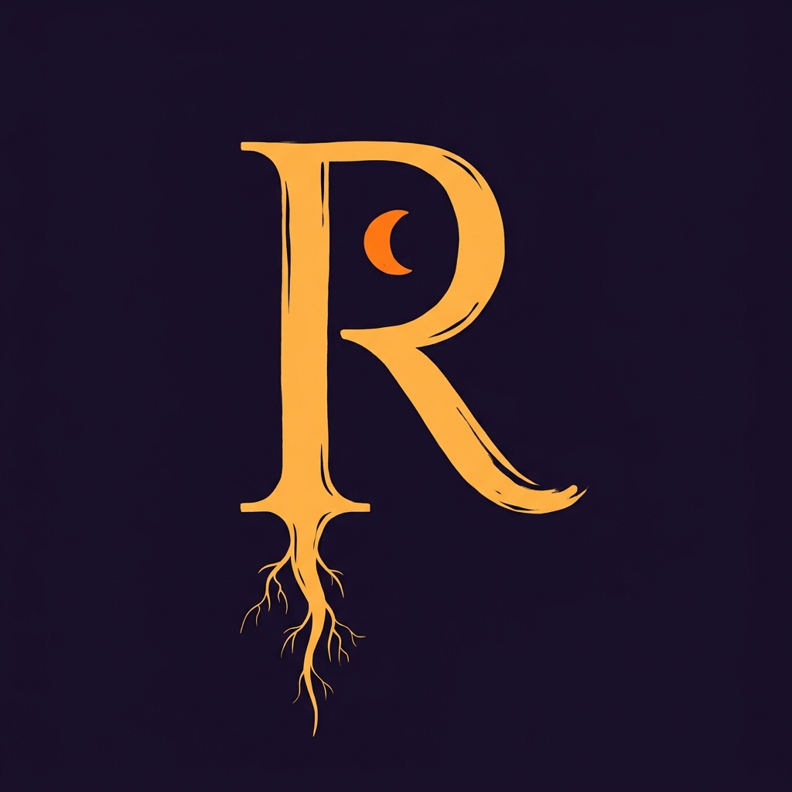
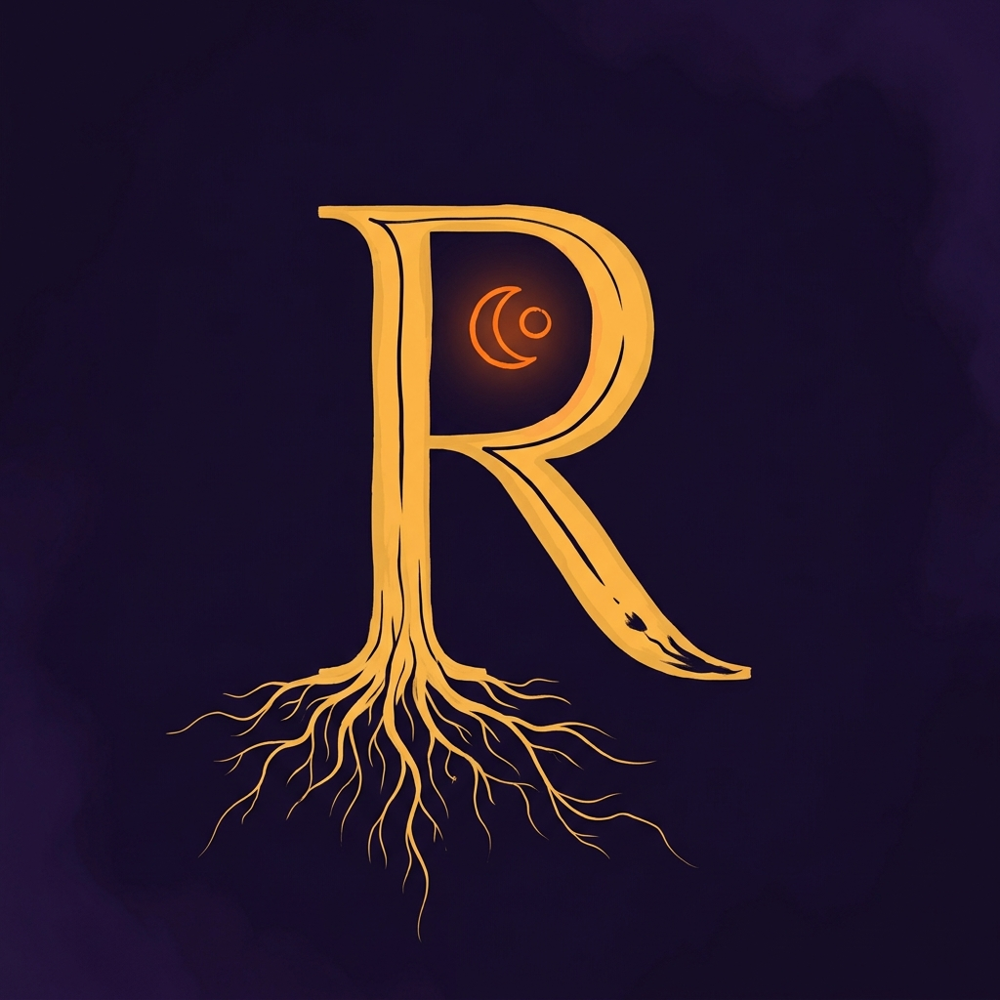

Round 2 — Concept C composite (v3 letterform × v1 flame)
Single composite variant. v3's robust R + v1's flame in the bowl. If this lands, lock it. If the flame is off, we can do one more reference-continuity pass adjusting only the flame.

Round 1 — 3 concepts × 3 variants
Preserved for reference. Round-1 reactions: A rejected (poor favicon scaling, didn't land emotionally), B concept strong but execution weak (round 2 TBD), C v3 letterform + v1 flame → composite above.
Concept A — Rewiring Sigil
Rigid circuit trace severed mid-stroke, re-routed into organic root. Ignition Orange ember at the splice. Fusion Gold throughout. The transformation (rigid → alive) is the mark.



Concept B — Broken Circle Healing
Fusion Gold ring, broken asymmetrically, caught mid-rejoin. Ignition Orange ember at the weld. Echoes F3's broken-circle vocabulary but inverts emotionally — this circle is actively closing, not stuck open.



Concept C — R-as-Sigil
Cinzel-adjacent capital R as structural spine. Stem descends into living root-filaments; bowl holds an Ignition Orange ember. Reads legibly as "R" at favicon scale, reads as sigil on second look.


